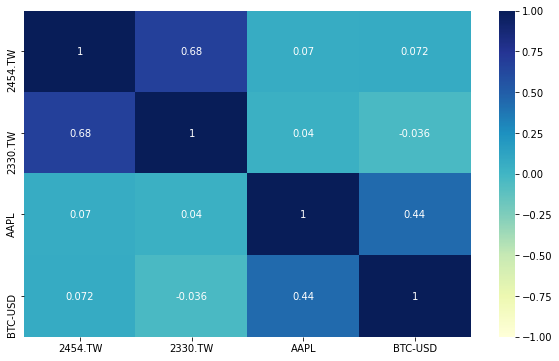

低波動 飆股長相
def compute_candle_volatility(timeperiod=20):
close = data.get("price:收盤價")
high = data.get("price:最高價")
low = data.get("price:最低價")
open_ = data.get("price:開盤價")
bullish_candle = close >= open_
bullish_volatility = (
abs(close.shift() - open_)
+ abs(open_ - low)
+ abs(low - high)
+ abs(high - close)
)
bearish_volatility = (
abs(close.shift() - open_)
+ abs(open_ - high)
+ abs(high - low)
+ abs(low - close)
)
candle_volatility = FinlabDataFrame(
np.nan, index=close.index, columns=close.columns
)
candle_volatility[bullish_candle] = bullish_volatility
candle_volatility[~bullish_candle] = bearish_volatility
volatility = (
candle_volatility.average(timeperiod) / close.average(timeperiod) * 100
)
return volatility
收盤價跟月營收合併
import finlab
import pandas as pd
from finlab import data
pd.options.display.float_format = lambda x: "%.2f" % x
if __name__ == "__main__":
close = data.get("price:收盤價")
rev = data.get("monthly_revenue:當月營收")
print(close)
print(rev)
merged_df = close.merge(rev, on='date', how='left', suffixes=('_close', '_rev'))
merged_df.fillna(method='bfill', inplace=True)
print(merged_df, merged_df.columns)
print(merged_df['2330_close'], merged_df['2330_rev'])
臺股漲跌與市值板塊圖
出處: https://www.finlab.tw/dashboard2-plotly-treemap/
import pandas as pd
import numpy as np
import finlab
from finlab import data
import plotly.express as px
"""
https://www.finlab.tw/dashboard2-plotly-treemap/
Treemap
"""
def df_date_filter(df, start=None, end=None):
if start:
df = df[df.index >= start]
if end:
df = df[df.index <= end]
return df
def create_treemap_data(start, end, item, clip=None):
close = data.get("price:收盤價")
basic_info = data.get("company_basic_info")
turnover = data.get("price:成交金額")
close_data = df_date_filter(close, start, end)
turnover_data = df_date_filter(turnover, start, end).iloc[1:].sum() / 100000000
return_ratio = (
(close_data.iloc[-1] / close_data.iloc[-2]).dropna().replace(np.inf, 0)
)
return_ratio = round((return_ratio - 1) * 100, 2)
concat_list = [close_data.iloc[-1], turnover_data, return_ratio]
col_names = ["stock_id", "close", "turnover", "return_ratio"]
if item not in ["return_ratio", "turnover_ratio"]:
try:
custom_item = df_date_filter(data.get(item), start, end).iloc[-1].fillna(0)
except Exception as e:
logger.error("data error, check the data is existed between start and end.")
logger.error(e)
return None
if clip:
custom_item = custom_item.clip(*clip)
concat_list.append(custom_item)
col_names.append(item)
df = pd.concat(concat_list, axis=1).dropna()
df = df.reset_index()
df.columns = col_names
basic_info_df = basic_info.copy()
basic_info_df["stock_id_name"] = basic_info_df["stock_id"] + basic_info_df["公司簡稱"]
df = df.merge(
basic_info_df[["stock_id", "stock_id_name", "產業類別", "市場別", "實收資本額(元)"]],
how="left",
on="stock_id",
)
df = df.rename(columns={"產業類別": "category", "市場別": "market", "實收資本額(元)": "base"})
df = df.dropna(thresh=5)
df["market_value"] = round(df["base"] / 10 * df["close"] / 100000000, 2)
df["turnover_ratio"] = df["turnover"] / (df["turnover"].sum()) * 100
df["country"] = "TW-Stock"
return df
def plot_tw_stock_treemap(
start=None,
end=None,
area_ind="market_value",
item="return_ratio",
clip=None,
color_scales="Temps",
):
"""Plot treemap chart for tw_stock
Treemap charts visualize hierarchical data using nested rectangles,
it is good for judging the overall market dynamics.
Args:
start(str): The date of data start point.ex:2021-01-02
end(str):The date of data end point.ex:2021-01-05
area_ind(str):The indicator to control treemap area size .
Select range is in ["market_value","turnover","turnover_ratio"]
item(str): The indicator to control treemap area color .
Select range is in ["return_ratio", "turnover_ratio"]
or use the other customized data which you could find from finlab database page,
ex:'price_earning_ratio:本益比'
clip(tuple):lower and upper pd.clip() setting for item values to make distinct colors.ex:(0,100)
color_scales(str):Used for the built-in named continuous
(sequential, diverging and cyclical) color scales in Plotly
Ref:https://plotly.com/python/builtin-colorscales/
Returns:
figure
"""
df = create_treemap_data(start, end, item, clip)
if df is None:
return None
df["custom_item_label"] = round(df[item], 2).astype(str)
if area_ind not in ["market_value", "turnover", "turnover_ratio"]:
return None
if item in ["return_ratio"]:
color_continuous_midpoint = 0
else:
color_continuous_midpoint = np.average(df[item], weights=df[area_ind])
fig = px.treemap(
df,
path=["country", "market", "category", "stock_id_name"],
values=area_ind,
color=item,
color_continuous_scale=color_scales,
color_continuous_midpoint=color_continuous_midpoint,
custom_data=["custom_item_label", "close", "turnover"],
title=f"TW-Stock Market TreeMap({start}~{end})"
f"---area_ind:{area_ind}---item:{item}",
width=1600,
height=800,
)
fig.update_traces(
textposition="middle center",
textfont_size=24,
texttemplate="%{label}(%{customdata[1]})<br>%{customdata[0]}",
)
return fig
if __name__ == "__main__":
# @title 臺股漲跌與市值板塊圖
start = "2021-07-01" # @param {type:"date"}
end = "2021-07-02" # @param {type:"date"}
area_ind = "turnover_ratio" # @param ["market_value","turnover","turnover_ratio"] {allow-input: true}
item = (
"return_ratio" # @param ["return_ratio", "turnover_ratio"] {allow-input: true}
)
clip = 1000 # @param {type:"number"}
plot_tw_stock_treemap(start, end, area_ind, item, clip)
finlab 的 mae gmfe bmfe
以 2063 世鎧 mae 是 0 代表 2023-01-03 進場～ 2023-02-01 出場 的所有日K open 價都高過 進場當天開盤價
是以進場價格做基準點～ 藏獒策略以開盤價進場 開盤價出場
| trade_index | stock_id | entry_date | exit_date | entry_sig_date | exit_sig_date | return | trade_price@entry_date | trade_price@exit_date | mae | gmfe | bmfe | mdd | return_include_fee |
|---|---|---|---|---|---|---|---|---|---|---|---|---|---|
| 630 | 2063 世鎧 | 2023-01-03 | 2023-02-01 | 2022-12-30 | 2023-01-31 | 0.0159 | 43.9000 | 44.6000 | 0.0000 | 0.0342 | 0.0000 | -0.0287 | 1.0000 |
| 631 | 3498 陽程 | 2023-01-03 | 2023-02-01 | 2022-12-30 | 2023-01-31 | -0.0225 | 37.8000 | 36.9500 | -0.0542 | 0.0582 | 0.0582 | -0.1062 | -2.8200 |
| 632 | 8996 高力 | 2023-01-03 | 2023-02-01 | 2022-12-30 | 2023-01-31 | 0.1568 | 185.0000 | 214.0000 | -0.0270 | 0.1568 | 0.0270 | -0.0526 | 15.0000 |
| 633 | 1104 環泥 | 2023-02-01 | 2023-03-01 | 2023-01-31 | 2023-02-24 | 0.0253 | 23.7000 | 24.3000 | -0.0042 | 0.0316 | 0.0274 | -0.0308 | 1.9300 |
| 634 | 1707 葡萄王 | 2023-01-03 | 2023-03-01 | 2022-12-30 | 2023-02-24 | 0.0737 | 169.5000 | 182.0000 | -0.0619 | 0.0737 | 0.0000 | -0.0619 | 6.7500 |
| 635 | 2727 王品 | 2023-02-01 | 2023-03-01 | 2023-01-31 | 2023-02-24 | 0.4865 | 185.0000 | 275.0000 | 0.0000 | 0.4865 | 0.0000 | -0.0455 | 47.7800 |
| 636 | 6612 奈米醫材 | 2023-02-01 | 2023-03-01 | 2023-01-31 | 2023-02-24 | 0.2284 | 116.0000 | 142.5000 | 0.0000 | 0.3405 | 0.0000 | -0.0870 | 22.1300 |
| 637 | 2916 滿心 | 2023-03-01 | 2023-04-06 | 2023-02-24 | 2023-03-31 | -0.0046 | 32.8000 | 32.6500 | -0.0244 | 0.0549 | 0.0549 | -0.0751 | -1.0400 |
| 638 | 3004 豐達科 | 2023-03-01 | 2023-04-06 | 2023-02-24 | 2023-03-31 | 0.0650 | 89.2000 | 93.9000 | -0.0695 | 0.0650 | 0.0381 | -0.1037 | 4.6500 |
| 639 | 3052 夆典 | 2023-03-01 | 2023-04-06 | 2023-02-24 | 2023-03-31 | -0.0560 | 11.6000 | 10.9500 | -0.0560 | 0.0000 | 0.0000 | -0.0560 | -6.1500 |
| 640 | 6664 群翊 | 2023-03-01 | 2023-04-06 | 2023-02-24 | 2023-03-31 | 0.0648 | 108.0000 | 115.0000 | -0.0648 | 0.0648 | 0.0000 | -0.0648 | 5.8600 |
| 641 | 8931 大汽電 | 2023-02-01 | 2023-04-06 | 2023-01-31 | 2023-03-31 | 0.6282 | 46.8000 | 76.2000 | 0.0000 | 0.7286 | 0.0000 | -0.0581 | 61.8700 |
| 642 | 3078 僑威 | 2023-04-06 | nan | 2023-03-31 | 2023-04-30 | 0.2362 | 44.2500 | 54.7000 | -0.0147 | 0.3107 | 0.0000 | -0.0569 | 22.8900 |
| 643 | 3540 曜越 | 2023-04-06 | nan | 2023-03-31 | 2023-04-30 | 0.0773 | 38.8000 | 41.8000 | -0.0052 | 0.1521 | 0.0013 | -0.0649 | 7.1000 |
| 644 | 4119 旭富 | 2023-04-06 | nan | 2023-03-31 | 2023-04-30 | 0.0496 | 121.0000 | 127.0000 | 0.0000 | 0.0992 | 0.0000 | -0.0451 | 4.3500 |
| 645 | 4153 鈺緯 | 2023-04-06 | nan | 2023-03-31 | 2023-04-30 | 0.1000 | 48.0000 | 52.8000 | 0.0000 | 0.2625 | 0.0000 | -0.1287 | 9.3600 |
| 646 | 4190 佐登-KY | 2023-04-06 | nan | 2023-03-31 | 2023-04-30 | 0.0741 | 94.5000 | 101.5000 | -0.0169 | 0.1111 | 0.0000 | -0.0333 | 6.7800 |
# -*- coding: utf-8 -*-
"""correlationMatrix.ipynb
Automatically generated by Colaboratory.
Original file is located at
https://colab.research.google.com/drive/1jmq3ycgp65_NURP8cY3vg2SvTDXc5X8n
"""
#!pip install yfinance > log.txt
#@title 輸入 Yahoo 股票代號(例如: 2330.TW, AAPL, BTC-USD)
stock_ids = "2454.TW,2330.TW, AAPL, BTC-USD" #@param {type:"string"}
import yfinance as yf
import time
import pandas as pd
stocks = stock_ids.replace(' ', '').split(',')
price = {}
for s in stocks:
print(f'download {s}')
ss = yf.Ticker(s)
# get historical market data
hist = ss.history(period='1y')
price[s] = hist['Close']
time.sleep(3)
import seaborn
import matplotlib.pyplot as plt
plt.rcParams['figure.figsize'] = (10, 6)
seaborn.heatmap(pd.DataFrame(price).pct_change().dropna(how='any').corr(), cmap="YlGnBu",vmax=1,vmin=-1, annot=True)

finlab策略
from finlab import data
from finlab.backtest import sim
import pandas as pd
import redis
import finlab
def connect_redis():
r = None
pool = redis.ConnectionPool(host="localhost", port=6379, db=8)
try:
r = redis.Redis(connection_pool=pool, charset="utf-8")
except Exception as err:
logger.error(err)
return r
# rs = connect_redis()
# rs.flushdb()
finlab.login("")
score = data.get('etl:finlab_tw_stock_market_ind')['score']
close = data.get("price:收盤價")
vol = data.get("price:成交股數")
vol_ma = vol.average(10)
rev = data.get('monthly_revenue:當月營收')
rev_year_growth = data.get('monthly_revenue:去年同月增減(%)')
rev_month_growth = data.get('monthly_revenue:上月比較增減(%)')
# 股價創年新高
cond1 = (close == close.rolling(250).max())
# 排除月營收連3月衰退10%以上
cond2 = ~(rev_year_growth < -10).sustain(3)
# 排除月營收成長趨勢過老(12個月內有至少8個月單月營收年增率大於60%)
cond3 = ~(rev_year_growth > 60).sustain(12,8)
# 確認營收底部，近月營收脫離近年穀底(連續3月的"單月營收近12月最小值/近月營收" < 0.8)
cond4 = ((rev.rolling(12).min())/(rev) < 0.8).sustain(3)
# 單月營收月增率連續3月大於-40%
cond5 = (rev_month_growth > -40).sustain(3)
# 流動性條件
cond6 = vol_ma > 200*1000
buy = cond1 & cond2 & cond3 & cond4 & cond5 & cond6
# 買比較冷門的股票
buy = vol_ma*buy
buy = buy[buy>0]
buy = buy.is_smallest(5)
long_position = buy.resample('M').last().reindex(close.index,method='ffill')
score_df = score >= 4
long_position *= score_df
# 做空訊號～多單遇大盤訊號轉空時出場，並反手做空指數避險
short_target = '00632R'
short_position = close[[short_target]].notna() * ~score_df
position = pd.concat([long_position, short_position], axis=1)
report = sim(position, upload=True, position_limit=1/3, fee_ratio=1.425/1000/3, stop_loss=0.08, trade_at_price='open' ,name='XXXX', live_performance_start='2022-06-01')
print(report.get_trades().to_markdown())
from finlab import data
from finlab.backtest import sim
import finlab
finlab.login("")
close = data.get("price:收盤價")
vol = data.get("price:成交股數")
vol_ma = vol.average(10)
rev = data.get('monthly_revenue:當月營收')
rev_year_growth = data.get('monthly_revenue:去年同月增減(%)')
rev_month_growth = data.get('monthly_revenue:上月比較增減(%)')
# 股價創年新高
cond1 = (close == close.rolling(250).max())
# 排除月營收連3月衰退10%以上
cond2 = ~(rev_year_growth < -10).sustain(3)
# 排除月營收成長趨勢過老(12個月內有至少8個月單月營收年增率大於60%)
cond3 = ~(rev_year_growth > 60).sustain(12,8)
# 確認營收底部(單月營收月增率連續3月大於-40)
cond4 = ((rev.rolling(12).min())/(rev) < 0.8).sustain(3)
# 單月營收月增率連續3月大於-40%
cond5 = (rev_month_growth > -40).sustain(3)
# 流動性條件
cond6 = vol_ma > 200*1000
buy = cond1 & cond2 & cond3 & cond4 & cond5 & cond6
# 買比較冷門的股票
buy = vol_ma*buy
buy = buy[buy>0]
buy = buy.is_smallest(5)
report = sim(buy , resample="M", upload=True, position_limit=1/3, fee_ratio=1.425/1000/3, stop_loss=0.08, trade_at_price='open',name='XXX', live_performance_start='2022-05-01')
print(report.get_trades().to_markdown())
from loguru import logger
from finlab import data
from finlab.backtest import sim
import finlab
import pandas as pd
import pickle
import redis
import zlib
def data_to_redis(r):
score = data.get("etl:finlab_tw_stock_market_ind")["score"]
close = data.get("price:收盤價")
vol = data.get("price:成交股數")
vol_ma = vol.average(10)
rev = data.get("monthly_revenue:當月營收")
rev_year_growth = data.get("monthly_revenue:去年同月增減(%)")
rev_month_growth = data.get("monthly_revenue:上月比較增減(%)")
EXPIRATION_SECONDS = 86400
# Set
r.setex("score", EXPIRATION_SECONDS, zlib.compress(pickle.dumps(score)))
r.setex("close", EXPIRATION_SECONDS, zlib.compress(pickle.dumps(close)))
r.setex("vol", EXPIRATION_SECONDS, zlib.compress(pickle.dumps(vol)))
r.setex("vol_ma", EXPIRATION_SECONDS, zlib.compress(pickle.dumps(vol_ma)))
r.setex("rev", EXPIRATION_SECONDS, zlib.compress(pickle.dumps(rev)))
r.setex(
"rev_year_growth",
EXPIRATION_SECONDS,
zlib.compress(pickle.dumps(rev_year_growth)),
)
r.setex(
"rev_month_growth",
EXPIRATION_SECONDS,
zlib.compress(pickle.dumps(rev_month_growth)),
)
def backtest(r):
# Get
score_df = pickle.loads(zlib.decompress(r.get("score")))
close_df = pickle.loads(zlib.decompress(r.get("close")))
vol_df = pickle.loads(zlib.decompress(r.get("vol")))
vol_ma_df = pickle.loads(zlib.decompress(r.get("vol_ma")))
rev_df = pickle.loads(zlib.decompress(r.get("rev")))
rev_year_growth_df = pickle.loads(zlib.decompress(r.get("rev_year_growth")))
rev_month_growth_df = pickle.loads(zlib.decompress(r.get("rev_month_growth")))
# print(score_df)
# print(close_df)
# print(vol_df)
# print(vol_ma_df)
# print(rev_df)
# print(rev_year_growth_df)
# print(rev_month_growth_df)
# 股價創年新高
cond1 = close_df == close_df.rolling(250).max()
# 排除月營收連3月衰退10%以上
cond2 = ~(rev_year_growth_df < -10).sustain(3)
# 排除月營收成長趨勢過老(12個月內有至少8個月單月營收年增率大於60%)
cond3 = ~(rev_year_growth_df > 60).sustain(12, 8)
# 確認營收底部，近月營收脫離近年穀底(連續3月的"單月營收近12月最小值/近月營收" < 0.8)
cond4 = ((rev_df.rolling(12).min()) / (rev_df) < 0.8).sustain(3)
# 單月營收月增率連續3月大於-40%
cond5 = (rev_month_growth_df > -40).sustain(3)
# 流動性條件
cond6 = vol_ma_df > 200 * 1000
buy = cond1 & cond2 & cond3 & cond4 & cond5 & cond6
# 買比較冷門的股票
buy = vol_ma_df * buy
buy = buy[buy > 0]
buy = buy.is_smallest(5)
long_position = buy.resample("M").last().reindex(close_df.index, method="ffill")
score_df = score_df >= 4
long_position *= score_df
# 做空訊號～多單遇大盤訊號轉空時出場，並反手做空指數避險
short_target = "00632R"
short_position = close_df[[short_target]].notna() * ~score_df
position = pd.concat([long_position, short_position], axis=1)
report = sim(
position,
upload=True,
position_limit=1 / 3,
fee_ratio=1.425 / 1000 / 3,
stop_loss=0.08,
trade_at_price="open",
name="XXXXX",
live_performance_start="2022-06-01",
)
# print(report.get_stats())
def connect_redis():
pool = redis.ConnectionPool(host="localhost", port=6379, db=0)
try:
r = redis.Redis(connection_pool=pool, charset="utf-8")
except Exception as err:
logger.error(err)
return r
if __name__ == "__main__":
finlab.login(
""
)
r = connect_redis()
# data_to_redis(r)
backtest(r)
highcharts_股價走勢.ipynb
https://colab.research.google.com/drive/1W1kH3cwNUTj7hMMyF8W4wcehiWLSyAUF?usp=sharing#scrollTo=Mij5sRmwbtCP
import yfinance as yf
# 取得股價歷史資料(含臺股\美股\加密貨幣)
symbol = '2330.TW' # 臺股上市:TW 臺股上櫃:TWO
start = '2018-01-01' # 起始時間
end = '2022-12-31' # 結束時間
ohlcv = yf.Ticker(symbol).history('max').loc[start:end]
from highcharts import Highchart
import datetime
from IPython.display import HTML,display
import os
# 客製化調整參數
color = '#4285f4' # 線的顏色 (red/green/blue/purple)
linewidth = 2 # 線的粗細
title = symbol # 標題名稱
width = 800 # 圖的寬度
height = 500 # 圖的高度
# 繪圖設定
H = Highchart(width=width,height=height)
x = ohlcv.index
y = round(ohlcv.Close,2)
data = [[index,s] for index,s in zip(x,y)]
H.add_data_set(data,'line','data',color=color)
H.set_options('xAxis',{'type':'datetime'})
H.set_options('title',{'text':title,'style':{'color':'black'}}) # 設定title
H.set_options('plotOptions',{'line':{'lineWidth':linewidth,'dataLabels':{'enabled': False}}}) # 設定線的粗度
H.set_options('tooltip',{'shared':True,'crosshairs':True}) # 設定為可互動式
# 顯示圖表
H.save_file('chart')
display(HTML('chart.html'))
os.remove('chart.html')
突破策略豆知識 | 如何避免假突破?
https://colab.research.google.com/drive/1M0XxnAMZoqoOrJQP9dyJVer5Q7YyRFOA?usp=sharing
https://www.finlab.tw/breakthrough_stock_picking_strategies/
# -*- coding: utf-8 -*-
"""股價創新高動能.ipynb
Automatically generated by Colaboratory.
Original file is located at
https://colab.research.google.com/drive/1M0XxnAMZoqoOrJQP9dyJVer5Q7YyRFOA
## 安裝套件
"""
# Commented out IPython magic to ensure Python compatibility.
# %%capture
# !pip install finlab > log.txt
# !pip install talib-binary > log.txt
"""## 股價創新高動能"""
from finlab.backtest import sim
from finlab import data
# 標的範圍為上市櫃普通股
with data.universe(market='TSE_OTC'):
# 取得收盤價
close = data.get("price:收盤價")
# 股價創近200日新高
position = (close == close.rolling(200).max())
# 每兩週再平衡，單檔最大持股比例限制20%，停損20%
report = sim(position, resample="2W", position_limit=0.2, stop_loss=0.2, name="股價創新高策略", upload=False)
report.display()
"""## 創新高延續動能策略
"""
from finlab.backtest import sim
from finlab import data
with data.universe(market='TSE_OTC'):
close = data.get("price:收盤價")
# 近5日內有3日以上的股價創前200日新高
position = (close == close.rolling(200).max()).sustain(5,3)
report = sim(position, resample="2W", position_limit=0.2, stop_loss=0.2, name="創新高延續動能策略", upload=False)
report.display()
import yfinance as yf
# 下載臺積電股票資料
df = yf.download("2317.TW", start="2014-01-01", end="2023-01-01")
# 將時間單位轉換為月份，取得每個月份的最後一筆資料，並填補缺失值
df = df.resample("M").last().bfill()
# 根據原始資料的時間索引重新排序，並填補缺失值
df = df.reindex(df.index, method="bfill")
print(df)
- FinlabDataFrame
from finlab.utils import logger
import datetime
import numpy as np
import pandas as pd
from finlab import data
import functools
class FinlabDataFrame(pd.DataFrame):
"""回測語法糖
除了使用熟悉的 Pandas 語法外，我們也提供很多語法糖，讓大家開發程式時，可以用簡易的語法完成複雜的功能，讓開發策略更簡潔！
我們將所有的語法糖包裹在 `FinlabDataFrame` 中，用起來跟 `pd.DataFrame` 一樣，但是多了很多功能！
只要使用 `finlab.data.get()` 所獲得的資料，皆為 `FinlabDataFrame` 格式，
接下來我們就來看看， `FinlabDataFrame` 有哪些好用的語法糖吧！
當資料日期沒有對齊（例如: 財報 vs 收盤價 vs 月報）時，在使用以下運算符號：`+`, `-`, `*`, `/`, `>`, `>=`, `==`, `<`, `<=`, `&`, `|`, `~`，不需要先將資料對齊，因為 `FinlabDataFrame` 會自動幫你處理，以下是示意圖。
<img src="https://i.ibb.co/pQr5yx5/Screen-Shot-2021-10-26-at-5-32-44-AM.png" alt="Screen-Shot-2021-10-26-at-5-32-44-AM">
以下是範例：`cond1` 與 `cond2` 分別為「每天」，和「每季」的資料，假如要取交集的時間，可以用以下語法：
```py
from finlab import data
# 取得 FinlabDataFrame
close = data.get('price:收盤價')
roa = data.get('fundamental_features:ROA稅後息前')
# 運算兩個選股條件交集
cond1 = close > 37
cond2 = roa > 0
cond_1_2 = cond1 & cond2
擷取 1101 臺泥 的訊號如下圖，可以看到 `cond1` 跟 `cond2` 訊號的頻率雖然不相同，但是由於 `cond1` 跟 `cond2` 是 `FinlabDataFrame`，所以可以直接取交集，而不用處理資料頻率對齊的問題。
<br />
<img src="https://i.ibb.co/m9chXSQ/imageconds.png" alt="imageconds">
總結來說，FinlabDataFrame 與一般 dataframe 唯二不同之處：
1. 多了一些 method，如`df.is_largest()`, `df.sustain()`...等。
2. 在做四則運算、不等式運算前，會將 df1、df2 的 index 取聯集，column 取交集。
"""
@property
def _constructor(self):
return FinlabDataFrame
@staticmethod
def reshape(df1, df2):
isfdf1 = isinstance(df1, FinlabDataFrame)
isfdf2 = isinstance(df2, FinlabDataFrame)
isdf1 = isinstance(df1, pd.DataFrame)
isdf2 = isinstance(df2, pd.DataFrame)
both_are_dataframe = (isfdf1 + isdf1) * (isfdf2 + isdf2) != 0
d1_index_freq = df1.get_index_str_frequency() if isfdf1 else None
d2_index_freq = df2.get_index_str_frequency() if isfdf2 else None
if ((d1_index_freq or d2_index_freq)
and (d1_index_freq != d2_index_freq)
and both_are_dataframe):
df1 = df1.index_str_to_date() if isfdf1 else df1
df2 = df2.index_str_to_date() if isfdf2 else df2
if isinstance(df2, pd.Series):
df2 = pd.DataFrame({c: df2 for c in df1.columns})
if both_are_dataframe:
index = df1.index.union(df2.index)
columns = df1.columns.intersection(df2.columns)
if len(df1.index) * len(df2.index) != 0:
index_start = max(df1.index[0], df2.index[0])
index = [t for t in index if index_start <= t]
return df1.reindex(index=index, method='ffill')[columns], \
df2.reindex(index=index, method='ffill')[columns]
else:
return df1, df2
def __lt__(self, other):
df1, df2 = self.reshape(self, other)
return pd.DataFrame.__lt__(df1, df2)
def __gt__(self, other):
df1, df2 = self.reshape(self, other)
return pd.DataFrame.__gt__(df1, df2)
def __le__(self, other):
df1, df2 = self.reshape(self, other)
return pd.DataFrame.__le__(df1, df2)
def __ge__(self, other):
df1, df2 = self.reshape(self, other)
return pd.DataFrame.__ge__(df1, df2)
def __eq__(self, other):
df1, df2 = self.reshape(self, other)
return pd.DataFrame.__eq__(df1, df2)
def __ne__(self, other):
df1, df2 = self.reshape(self, other)
return pd.DataFrame.__ne__(df1, df2)
def __sub__(self, other):
df1, df2 = self.reshape(self, other)
return pd.DataFrame.__sub__(df1, df2)
def __add__(self, other):
df1, df2 = self.reshape(self, other)
return pd.DataFrame.__add__(df1, df2)
def __mul__(self, other):
df1, df2 = self.reshape(self, other)
return pd.DataFrame.__mul__(df1, df2)
def __truediv__(self, other):
df1, df2 = self.reshape(self, other)
return pd.DataFrame.__truediv__(df1, df2)
def __rshift__(self, other):
return self.shift(-other)
def __lshift__(self, other):
return self.shift(other)
def __and__(self, other):
df1, df2 = self.reshape(self, other)
return pd.DataFrame.__and__(df1, df2)
def __or__(self, other):
df1, df2 = self.reshape(self, other)
return pd.DataFrame.__or__(df1, df2)
def __getitem__(self, other):
df1, df2 = self.reshape(self, other)
return pd.DataFrame.__getitem__(df1, df2)
def index_str_to_date(self):
"""財務月季報索引格式轉換
將以下資料的索引轉換成datetime格式:
月營收 (ex:2022-M1) 從文字格式轉為公告截止日。
財務季報 (ex:2022-Q1) 從文字格式轉為財報電子檔資料上傳日。
通常使用情境為對不同週期的dataframe做reindex，常用於以公告截止日作為訊號產生日。
Returns:
(pd.DataFrame): data
Examples:
```py
data.get('monthly_revenue:當月營收').index_str_to_date()
data.get('financial_statement:現金及約當現金').index_str_to_date()
```
"""
if len(self.index) == 0 or not isinstance(self.index[0], str):
return self
if self.index[0].find('M') != -1:
return self._index_str_to_date_month()
elif self.index[0].find('Q') != -1:
return self._index_str_to_date_season()
return self
@staticmethod
def to_business_day(date):
def skip_weekend(d):
add_days = {5: 2, 6: 1}
wd = d.weekday()
if wd in add_days: d += datetime.timedelta(days=add_days[wd])
return d
close = data.get('price:收盤價')
return pd.Series(date).apply(lambda d: skip_weekend(d) if d in close.index or d < close.index[0] or d > close.index[-1] else close.loc[d:].index[0]).values
def get_index_str_frequency(self):
if len(self.index) == 0:
return None
if not isinstance(self.index[0], str):
return None
if (self.index.str.find('M') != -1).all():
return 'month'
if (self.index.str.find('Q') != -1).all():
return 'season'
return None
def _index_date_to_str_month(self):
# index is already str
if len(self.index) == 0 or not isinstance(self.index[0], pd.Timestamp):
return self
index = (self.index - datetime.timedelta(days=30)).strftime('%Y-M%m')
return FinlabDataFrame(self.values, index=index, columns=self.columns)
def _index_str_to_date_month(self):
# index is already timestamps
if len(self.index) == 0 or not isinstance(self.index[0], str):
return self
if not (self.index.str.find('M') != -1).all():
logger.warning('FinlabDataFrame: invalid index, cannot format index to monthly timestamp.')
return self
index = pd.to_datetime(self.index, format='%Y-M%m') + pd.offsets.MonthBegin() + datetime.timedelta(days=9)
# chinese new year and covid-19 impact monthly revenue deadline
replacements = {
datetime.datetime(2020, 2, 10): datetime.datetime(2020, 2, 15),
datetime.datetime(2021, 2, 10): datetime.datetime(2021, 2, 15),
datetime.datetime(2022, 2, 10): datetime.datetime(2022, 2, 14),
}
replacer = replacements.get
index = [replacer(n, n) for n in index]
index = self.to_business_day(index)
ret = FinlabDataFrame(self.values, index=index, columns=self.columns)
ret.index.name = 'date'
return ret
def _index_date_to_str_season(self):
# index is already str
if len(self.index) == 0 or not isinstance(self.index[0], pd.Timestamp):
return self
q = self.index.strftime('%m').astype(int).map({5:1, 8:2, 9:2, 10:3, 11:3, 3:4, 4:4})
year = self.index.year.copy()
year -= (q == 4)
index = year.astype(str) + '-Q' + q.astype(str)
return FinlabDataFrame(self.values, index=index, columns=self.columns)
def deadline(self):
"""財務季報索引轉換成公告截止日
將財務季報 (ex:2022Q1) 從文字格式轉為公告截止日的datetime格式，
通常使用情境為對不同週期的dataframe做reindex，常用於以公告截止日作為訊號產生日。
Returns:
(pd.DataFrame): data
Examples:
```py
data.get('financial_statement:現金及約當現金').deadline()
```
"""
return self._index_str_to_date_season(detail=False)
def _index_str_to_date_season(self, detail=True):
disclosure_dates = (calc_disclosure_dates(detail)
.reindex_like(self)
.unstack())
self.columns.name = 'stock_id'
unstacked = self.unstack()
ret = (pd.DataFrame({
'value': unstacked.values,
'disclosures': disclosure_dates.values,
}, unstacked.index)
.reset_index()
.drop_duplicates(['disclosures', 'stock_id'])
.pivot(index='disclosures', columns='stock_id', values='value').ffill()
.pipe(lambda df: df.loc[df.index.notna()])
.pipe(lambda df: FinlabDataFrame(df))
.rename_axis('date')
)
if not detail:
ret.index = self.to_business_day(ret.index)
return ret
def average(self, n):
"""取 n 筆移動平均
若股票在時間窗格內，有 N/2 筆 NaN，則會產生 NaN。
Args:
n (positive-int): 設定移動窗格數。
Returns:
(pd.DataFrame): data
Examples:
股價在均線之上
```py
from finlab import data
close = data.get('price:收盤價')
sma = close.average(10)
cond = close > sma
```
只需要簡單的語法，就可以將其中一部分的訊號繪製出來檢查：
```py
import matplotlib.pyplot as plt
close.loc['2021', '2330'].plot()
sma.loc['2021', '2330'].plot()
cond.loc['2021', '2330'].mul(20).add(500).plot()
plt.legend(['close', 'sma', 'cond'])
```
<img src="https://i.ibb.co/Mg1P85y/sma.png" alt="sma">
"""
return self.rolling(n, min_periods=int(n/2)).mean()
def is_largest(self, n):
"""取每列前 n 筆大的數值
若符合 `True` ，反之為 `False` 。用來篩選每天數值最大的股票。
<img src="https://i.ibb.co/8rh3tbt/is-largest.png" alt="is-largest">
Args:
n (positive-int): 設定每列前 n 筆大的數值。
Returns:
(pd.DataFrame): data
Examples:
每季 ROA 前 10 名的股票
```py
from finlab import data
roa = data.get('fundamental_features:ROA稅後息前')
good_stocks = roa.is_largest(10)
```
"""
return self.astype(float).apply(lambda s: s.nlargest(n), axis=1).reindex_like(self).notna()
def is_smallest(self, n):
"""取每列前 n 筆小的數值
若符合 `True` ，反之為 `False` 。用來篩選每天數值最小的股票。
Args:
n (positive-int): 設定每列前 n 筆小的數值。
Returns:
(pd.DataFrame): data
Examples:
股價淨值比最小的 10 檔股票
```py
from finlab import data
pb = data.get('price_earning_ratio:股價淨值比')
cheap_stocks = pb.is_smallest(10)
```
"""
return self.astype(float).apply(lambda s: s.nsmallest(n), axis=1).reindex_like(self).notna()
def is_entry(self):
"""進場點
取進場訊號點，若符合條件的值則為True，反之為False。
Returns:
(pd.DataFrame): data
Examples:
策略為每日收盤價前10高，取進場點。
```py
from finlab import data
data.get('price:收盤價').is_largest(10).is_entry()
```
"""
return (self & ~self.shift(fill_value=False))
def is_exit(self):
"""出場點
取出場訊號點，若符合條件的值則為 True，反之為 False。
Returns:
(pd.DataFrame): data
Examples:
策略為每日收盤價前10高，取出場點。
```py
from finlab import data
data.get('price:收盤價').is_largest(10).is_exit()
```
"""
return (~self & self.shift(fill_value=False))
def rise(self, n=1):
"""數值上升中
取是否比前第n筆高，若符合條件的值則為True，反之為False。
<img src="https://i.ibb.co/Y72bN5v/Screen-Shot-2021-10-26-at-6-43-41-AM.png" alt="Screen-Shot-2021-10-26-at-6-43-41-AM">
Args:
n (positive-int): 設定比較前第n筆高。
Returns:
(pd.DataFrame): data
Examples:
收盤價是否高於10日前股價
```py
from finlab import data
data.get('price:收盤價').rise(10)
```
"""
return self > self.shift(n)
def fall(self, n=1):
"""數值下降中
取是否比前第n筆低，若符合條件的值則為True，反之為False。
<img src="https://i.ibb.co/Y72bN5v/Screen-Shot-2021-10-26-at-6-43-41-AM.png" alt="Screen-Shot-2021-10-26-at-6-43-41-AM">
Args:
n (positive-int): 設定比較前第n筆低。
Returns:
(pd.DataFrame): data
Examples:
收盤價是否低於10日前股價
```py
from finlab import data
data.get('price:收盤價').fall(10)
```
"""
return self < self.shift(n)
def groupby_category(self):
"""資料按產業分群
類似 `pd.DataFrame.groupby()`的處理效果。
Returns:
(pd.DataFrame): data
Examples:
半導體平均股價淨值比時間序列
```py
from finlab import data
pe = data.get('price_earning_ratio:股價淨值比')
pe.groupby_category().mean()['半導體'].plot()
```
<img src="https://i.ibb.co/Tq2fKBp/pbmean.png" alt="pbmean">
全球 2020 量化寬鬆加上晶片短缺，使得半導體股價淨值比衝高。
"""
categories = data.get('security_categories')
cat = categories.set_index('stock_id').category.to_dict()
org_set = set(cat.values())
set_remove_illegal = set(
o for o in org_set if isinstance(o, str) and o != 'nan')
set_remove_illegal
refine_cat = {}
for s, c in cat.items():
if c == None or c == 'nan':
refine_cat[s] = '其他'
continue
if c == '電腦及週邊':
refine_cat[s] = '電腦及週邊設備業'
continue
if c[-1] == '業' and c[:-1] in set_remove_illegal:
refine_cat[s] = c[:-1]
else:
refine_cat[s] = c
col_categories = pd.Series(self.columns.map(
lambda s: refine_cat[s] if s in cat else '其他'))
return self.groupby(col_categories.values, axis=1)
def entry_price(self, trade_at='close'):
signal = self.is_entry()
adj = data.get('etl:adj_close') if trade_at == 'close' else data.get(
'etl:adj_open')
adj, signal = adj.reshape(
adj.loc[signal.index[0]: signal.index[-1]], signal)
return adj.bfill()[signal.shift(fill_value=False)].ffill()
def sustain(self, nwindow, nsatisfy=None):
"""持續 N 天滿足條件
取移動 nwindow 筆加總大於等於nsatisfy，若符合條件的值則為True，反之為False。
Args:
nwindow (positive-int): 設定移動窗格。
nsatisfy (positive-int): 設定移動窗格計算後最低滿足數值。
Returns:
(pd.DataFrame): data
Examples:
收盤價是否連兩日上漲
```py
from finlab import data
data.get('price:收盤價').rise().sustain(2)
```
"""
nsatisfy = nsatisfy or nwindow
return self.rolling(nwindow).sum() >= nsatisfy
def industry_rank(self, categories=None):
"""計算產業 ranking 排名，0 代表產業內最低，1 代表產業內最高
Args:
categories (list of str): 欲考慮的產業，ex: ['貿易百貨', '雲端運算']，預設為全產業，請參考 `data.get('security_industry_themes')` 中的產業項目。
Examples:
本意比產業排名分數
```py
from finlab import data
pe = data.get('price_earning_ratio:本益比')
pe_rank = pe.industry_rank()
print(pe_rank)
```
"""
themes = (data.get('security_industry_themes')
.copy() # 複製
.assign(category=lambda self: self.category
.apply(lambda s: eval(s))) # 從文字格式轉成陣列格
.explode('category') # 展開資料
)
categories = (categories
or set(themes.category[themes.category.str.find(':') == -1]))
def calc_rank(ind):
stock_ids = themes.stock_id[themes.category == ind]
return (self[stock_ids].pipe(lambda self: self.rank(axis=1, pct=True)))
return (pd.concat([calc_rank(ind) for ind in categories],axis=1)
.groupby(level=0, axis=1).mean())
def quantile_row(self, c):
"""股票當天數值分位數
取得每列c定分位數的值。
Args:
c (positive-int): 設定每列 n 定分位數的值。
Returns:
(pd.DataFrame): data
Examples:
取每日股價前90％分位數
```py
from finlab import data
data.get('price:收盤價').quantile_row(0.9)
```
"""
s = self.quantile(c, axis=1)
return s
def exit_when(self, exit):
df, exit = self.reshape(self, exit)
df.fillna(False, inplace=True)
exit.fillna(False, inplace=True)
entry_signal = df.is_entry()
exit_signal = df.is_exit()
exit_signal |= exit
# build position using entry_signal and exit_signal
position = pd.DataFrame(np.nan, index=df.index, columns=df.columns)
position[entry_signal] = 1
position[exit_signal] = 0
position.ffill(inplace=True)
position = position == 1
position.fillna(False)
return position
def hold_until(self, exit, nstocks_limit=None, stop_loss=-np.inf, take_profit=np.inf, trade_at='close', rank=None):
"""訊號進出場
這大概是所有策略撰寫中，最重要的語法糖，上述語法中 `entries` 為進場訊號，而 `exits` 是出場訊號。所以 `entries.hold_until(exits)` ，就是進場訊號為 `True` 時，買入並持有該檔股票，直到出場訊號為 `True ` 則賣出。
<img src="https://i.ibb.co/PCt4hPd/Screen-Shot-2021-10-26-at-6-35-05-AM.png" alt="Screen-Shot-2021-10-26-at-6-35-05-AM">
此函式有很多細部設定，可以讓你最多選擇 N 檔股票做輪動。另外，當超過 N 檔進場訊號發生，也可以按照客製化的排序，選擇優先選入的股票。最後，可以設定價格波動當輪動訊號，來增加出場的時機點。
Args:
exit (pd.Dataframe): 出場訊號。
nstocks_limit (int)`: 輪動檔數上限，預設為None。
stop_loss (float): 價格波動輪動訊號，預設為None，不生成輪動訊號。範例：0.1，代表成本價下跌 10% 時產生出場訊號。
take_profit (float): 價格波動輪動訊號，預設為None，不生成輪動訊號。範例：0.1，代表成本價上漲 10% 時產生出場訊號。
trade_at (str): 價格波動輪動訊號參考價，預設為'close'。可選 `close` 或 `open`。
rank (pd.Dataframe): 當天進場訊號數量超過 nstocks_limit 時，以 rank 數值越大的股票優先進場。
Returns:
(pd.DataFrame): data
Examples:
價格 > 20 日均線入場, 價格 < 60 日均線出場，最多持有10檔，超過 10 個進場訊號，則以股價淨值比小的股票優先選入。
```python
from finlab import data
from finlab.backtest import sim
close = data.get('price:收盤價')
pb = data.get('price_earning_ratio:股價淨值比')
sma20 = close.average(20)
sma60 = close.average(60)
entries = close > sma20
exits = close < sma60
＃pb前10小的標的做輪動
position = entries.hold_until(exits, nstocks_limit=10, rank=-pb)
sim(position)
```
"""
if nstocks_limit is None:
nstocks_limit = len(self.columns)
union_index = self.index.union(exit.index)
intersect_col = self.columns.intersection(exit.columns)
if stop_loss != -np.inf or take_profit != np.inf:
price = data.get(f'etl:adj_{trade_at}')
union_index = union_index.union(
price.loc[union_index[0]: union_index[-1]].index)
intersect_col = intersect_col.intersection(price.columns)
else:
price = pd.DataFrame()
if rank is not None:
union_index = union_index.union(rank.index)
intersect_col = intersect_col.intersection(rank.columns)
entry = self.reindex(union_index, columns=intersect_col,
method='ffill').ffill().fillna(False)
exit = exit.reindex(union_index, columns=intersect_col,
method='ffill').ffill().fillna(False)
if price is not None:
price = price.reindex(
union_index, columns=intersect_col, method='ffill')
if rank is not None:
rank = rank.reindex(
union_index, columns=intersect_col, method='ffill')
else:
rank = pd.DataFrame(1, index=union_index, columns=intersect_col)
max_rank = rank.max().max()
min_rank = rank.min().min()
rank = (rank - min_rank) / (max_rank - min_rank)
rank.fillna(0, inplace=True)
def rotate_stocks(ret, entry, exit, nstocks_limit, stop_loss=-np.inf, take_profit=np.inf, price=None, ranking=None):
nstocks = 0
ret[0][np.argsort(entry[0])[-nstocks_limit:]] = 1
ret[0][exit[0] == 1] = 0
ret[0][entry[0] == 0] = 0
entry_price = np.empty(entry.shape[1])
entry_price[:] = np.nan
for i in range(1, entry.shape[0]):
# regitser entry price
if stop_loss != -np.inf or take_profit != np.inf:
is_entry = ((ret[i-2] == 0) if i >
1 else (ret[i-1] == 1))
is_waiting_for_entry = np.isnan(entry_price) & (ret[i-1] == 1)
is_entry |= is_waiting_for_entry
entry_price[is_entry == 1] = price[i][is_entry == 1]
# check stop_loss and take_profit
returns = price[i] / entry_price
stop = (returns > 1 + abs(take_profit)
) | (returns < 1 - abs(stop_loss))
exit[i] |= stop
# run signal
rank = (entry[i] * ranking[i] + ret[i-1] * 3)
rank[exit[i] == 1] = -1
rank[(entry[i] == 0) & (ret[i-1] == 0)] = -1
ret[i][np.argsort(rank)[-nstocks_limit:]] = 1
ret[i][rank == -1] = 0
return ret
ret = pd.DataFrame(0, index=entry.index, columns=entry.columns)
ret = rotate_stocks(ret.values,
entry.astype(int).values,
exit.astype(int).values,
nstocks_limit,
stop_loss,
take_profit,
price=price.values,
ranking=rank.values)
return pd.DataFrame(ret, index=entry.index, columns=entry.columns)
@functools.lru_cache def calc_disclosure_dates(detail=True):
cinfo = data.get('company_basic_info').copy() cinfo['id'] = cinfo.stock_id.str.split(' ').str[0] cinfo = cinfo.set_index('id') cinfo = cinfo[~cinfo.index.duplicated(keep='last')]
def calc_default_disclosure_dates(s): sid = s.name cat = cinfo.loc[sid].產業類別 if sid in cinfo.index else 'etf' short_name = cinfo.loc[sid].公司簡稱 if sid in cinfo.index else 'etf'
if cat == '金融業':
calendar = {
'1': '-05-15',
'2': '-08-31',
'3': '-11-14',
'4': '-03-31',
}
elif cat == '金融保險業':
calendar = {
'1': '-04-30',
'2': '-08-31',
'3': '-10-31',
'4': '-03-31',
}
elif 'KY' in short_name:
calendar = {
'old':{
'1': '-05-15',
'2': '-08-14',
'3': '-11-14',
'4': '-03-31',
},
'new':{
'1': '-05-15',
'2': '-08-31',
'3': '-11-14',
'4': '-03-31',
},
}
else:
calendar = {
'1': '-05-15',
'2': '-08-14',
'3': '-11-14',
'4': '-03-31',
}
get_year = lambda year, season: str(year) if int(season) != 4 else str(int(year) + 1)
ky_policy_check = lambda year: 'new' if year >= '2021' else 'old'
return pd.to_datetime(s.index.map(lambda d: get_year(d[:4], d[-1]) + calendar[ky_policy_check(d[:4])][d[-1]]) if 'KY' in short_name else s.index.map(lambda d: get_year(d[:4], d[-1]) + calendar[d[-1]]))
def season_end(s):
calendar = {
'1': '-3-31',
'2': '-6-30',
'3': '-9-30',
'4': '-12-31',
}
return pd.to_datetime(s.index.map(lambda d: d[:4] + calendar[d[-1]]))
disclosure_dates = data.get('financial_statements_upload_detail:upload_date') disclosure_dates = disclosure_dates.apply(pd.to_datetime)
financial_season_end = disclosure_dates.apply(season_end) default_disclosure_dates = disclosure_dates.apply(calc_default_disclosure_dates)
disclosure_dates[(disclosure_dates > default_disclosure_dates) | (disclosure_dates < financial_season_end)] = pd.NaT disclosure_dates[(disclosure_dates.diff() <= datetime.timedelta(days=0))] = pd.NaT disclosure_dates.loc['2019-Q1', '3167'] = pd.NaT disclosure_dates.loc['2015-Q1', '5536'] = pd.NaT disclosure_dates.loc['2018-Q1', '5876'] = pd.NaT
disclosure_dates = disclosure_dates.fillna(default_disclosure_dates) disclosure_dates.columns.name = 'stock_id'
if detail: return disclosure_dates return default_disclosure_dates
## 本益成長比(月營收截止日換股)
https://doc.finlab.tw/tools/guide_for_beginners/
```python
from finlab import data
from finlab.backtest import sim
import finlab
finlab.login("cdnE+4n53DXjKkN8J7spHLvPq3xwycL6gfd0PaUL+UDWOAKroWHcXUNsN82ibihU#free")
rev = data.get('monthly_revenue:當月營收')
rev_ma3 = rev.average(3)
rev_ma12 = rev.average(12)
# 營收趨勢多頭策略
cond1 = rev_ma3/rev_ma12 > 1.1
cond2 = rev/rev.shift(1) > 0.9
cond_all = cond1 & cond2
pe = data.get('price_earning_ratio:本益比')
營業利益成長率 = data.get('fundamental_features:營業利益成長率')
# 本益成長比
peg = (pe/營業利益成長率)
# 本益成長比和原訊號相乘，若不持有則相乘後等於0
position = peg*(cond_all)
# 原訊號為0的不要選，若沒加這行且策略只選到7檔，之後還是會選3檔訊號為0(不持有)的補足10檔，執行這行就會排除訊號為0。
position = position[position>0]
# 選股挑本益成長比前10小的
position = position.is_smallest(10)
print(position)
# 月營收截止日換股
position = position.reindex(rev.index_str_to_date().index, method='ffill')
print(position)
input()
report = sim(position=position, name="策略教學範例:peg_rev", stop_loss=0.1, upload=False)
report.display()
股價淨值比
from finlab import data
from finlab.backtest import sim
pb = data.get('price_earning_ratio:股價淨值比')
close = data.get('price:收盤價')
position = (1/(pb * close) * (close > close.average(60)) * (close > 5)).is_largest(20)
report = sim(position, resample='Q',mae_mfe_window=30,mae_mfe_window_step=2)
report.display_mae_mfe_analysis()
is_smallest
import pandas as pd
def is_smallest(df, n):
return df.astype(float).apply(lambda s: s.nsmallest(n), axis=1).reindex_like(df).notna()
df = pd.DataFrame({
'A': [1.2, 2.5, 3.1],
'B': [2.2, 1.8, 5.5],
'C': [3.3, 4.5, 0.7],
'D': [4.4, 5.5, 2.2],
'E': [5.5, 3.3, 4.4]
})
print(df)
result = is_smallest(df, 2)
print(result)
#這個 DataFrame 有 5 列 3 行，包含 15 個浮點數值。現在需要按行找到每行最小的 2 個數值所在的列，將其對應的索引置為 True。
#
#使用以下程式碼進行處理：
#
#複製
#n = 2
#result = df.astype(float).apply(lambda s: s.nsmallest(n), axis=1).reindex_like(df).notna()
#這裡的 n 為 2，在上面的程式碼中，先將 df 轉換為浮點格式，然後按行進行遍歷，對每一行調用 s.nsmallest(n) 函數找到最小的 2 個數值所在的列，其它位置置為 NaN，返回一個 Series 對象。接著把這個 Series 對象與原始 DataFrame 進行重索引，並且補缺失值為 False，最終得到一個與原始 DataFrame 一樣大小的布林值 DataFrame。
#
#執行上述程式之後，可以得到以下結果：
#
#複製
# A B C D E
#0 False True False False False
#1 True False False False True
#2 False True True False False
#這個結果的含義是：
#
#第一行最小的 2 個數值分別位於 B 列，因此 B 列為 True，其餘為 False；
夏普值
出處： https://www.finlab.tw/python%e6%96%b0%e6%89%8b%e6%95%99%e5%ad%b8%ef%bc%9a%e5%a4%8f%e6%99%ae%e6%8c%87%e6%95%b8%e7%ad%96%e7%95%a5/
import yfinance as yf
import pandas as pd
import numpy as np
def crawl_price(stock_id):
stock = yf.Ticker(stock_id)
df = stock.history(period="max")
return df
twii = crawl_price("^TWII")
print(twii)
mean = twii['Close'].pct_change().rolling(252).mean()
std = twii['Close'].pct_change().rolling(252).std()
sharpe = mean / std
# sharpe ratio 平滑
sr = sharpe
srsma = sr.rolling(60).mean()
# sharpe ratio 的斜率
srsmadiff = srsma.diff()
# 計算買入賣出點
buy = (srsmadiff > 0) & (srsmadiff.shift() < 0)
sell = (srsmadiff < 0) & (srsmadiff.shift() > 0)
# 計算持有時間
hold = pd.Series(np.nan, index=buy.index)
hold[buy] = 1
hold[sell] = 0
hold.ffill(inplace=True)
hold.plot()
# 持有時候的績效
adj = twii['Close'][buy.index]
(adj.pct_change().shift(-1)+1).fillna(1)[hold == 1].cumprod().plot()
def backtest(a, b, c, d, plot=False):
sr = sharpe
srsma = sr.rolling(a).mean()
srsmadiff = srsma.diff() * 100
ub = srsmadiff.quantile(b)
lb = srsmadiff.quantile(c)
buy = ((srsmadiff.shift(d) < lb) & (srsmadiff > ub))
sell = ((srsmadiff.shift(d) > ub) & (srsmadiff < lb))
hold = pd.Series(np.nan, index=buy.index)
hold[buy] = 1
hold[sell] = 0
hold.ffill(inplace=True)
adj = twii['Close'][buy.index]
if plot:
(adj.pct_change().shift(-1)+1).fillna(1)[hold == 1].cumprod().plot()
hold.plot()
eq = (adj.pct_change().shift(-1)+1).fillna(1)[hold == 1].cumprod()
if len(eq) > 0:
return eq.iloc[-1]
else:
return 1
maxeq = 0
for a in range(100,200,20):
for b in np.arange(0.3, 0.9, 0.03):
for c in np.arange(0.3, 0.6, 0.03):
for d in range(60, 180, 10):
eq = backtest(a,b,c,d)
if maxeq < eq:
maxeq = eq
print(eq, a,b,c,d)